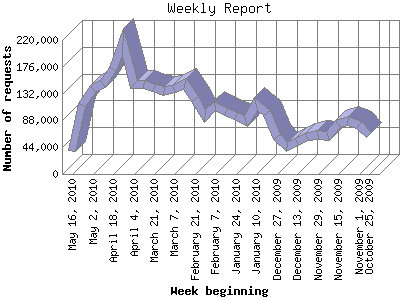

The Weekly Report identifies the activity for each week within the report
time frame. Remember that one page hit can result in several server requests
as the images for each page are loaded.
Note: Depending on the
report time frame for this report the first and last week may not represent
a full seven day week, resulting in lower hits.

| Week beginning | Number of requests | Number of page requests | |
|---|---|---|---|
| 1. | October 25, 2009 | 64,084 | 4,984 |
| 2. | November 1, 2009 | 81,119 | 5,885 |
| 3. | November 8, 2009 | 86,197 | 6,207 |
| 4. | November 15, 2009 | 81,940 | 6,075 |
| 5. | November 22, 2009 | 62,774 | 5,403 |
| 6. | November 29, 2009 | 63,729 | 5,184 |
| 7. | December 6, 2009 | 60,292 | 5,331 |
| 8. | December 13, 2009 | 53,064 | 4,932 |
| 9. | December 20, 2009 | 44,710 | 4,573 |
| 10. | December 27, 2009 | 59,939 | 4,397 |
| 11. | January 3, 2010 | 100,785 | 5,334 |
| 12. | January 10, 2010 | 114,350 | 6,195 |
| 13. | January 17, 2010 | 87,140 | 5,033 |
| 14. | January 24, 2010 | 95,236 | 5,915 |
| 15. | January 31, 2010 | 101,316 | 6,846 |
| 16. | February 7, 2010 | 111,073 | 6,696 |
| 17. | February 14, 2010 | 95,515 | 5,737 |
| 18. | February 21, 2010 | 123,212 | 7,024 |
| 19. | February 28, 2010 | 148,124 | 9,919 |
| 20. | March 7, 2010 | 139,862 | 8,528 |
| 21. | March 14, 2010 | 135,620 | 7,463 |
| 22. | March 21, 2010 | 141,056 | 6,947 |
| 23. | March 28, 2010 | 147,636 | 8,561 |
| 24. | April 4, 2010 | 148,265 | 8,439 |
| 25. | April 11, 2010 | 216,600 | 11,920 |
| 26. | April 18, 2010 | 173,208 | 9,369 |
| 27. | April 25, 2010 | 147,977 | 6,620 |
| 28. | May 2, 2010 | 139,822 | 6,543 |
| 29. | May 9, 2010 | 113,509 | 6,869 |
| 30. | May 16, 2010 | 37,682 | 4,871 |
Most active week beginning April 11, 2010 : 11,920 pages sent. 216,600 requests handled.
Weekly average: 6,593 pages sent. 105,861 requests handled.
This report was generated on May 21, 2010 07:02.
Report time frame October 27, 2009 00:05 to May 21, 2010 00:00.
| Web statistics report produced by: analog 6.0 / Report Magic 2.21 |